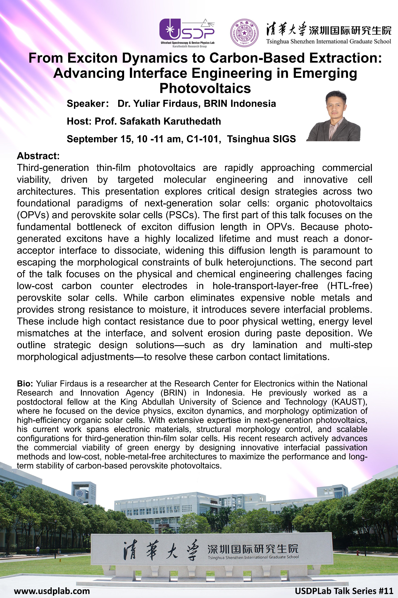

We were delighted to host Dr. Yuliar Firdaus from BRIN Indonesia for a seminar entitled From Exciton Dynamics to Carbon-Based Extraction: Advancing Interface Engineering in Emerging Photovoltaics.
Dr. Firdaus presented recent advances in two important areas of emerging thin-film photovoltaics: exciton dynamics in organic solar cells and interface engineering in carbon-electrode perovskite solar cells. In the first part of the seminar, he discussed the rapid evolution of organic photovoltaics from polymer–fullerene systems to modern non-fullerene acceptor solar cells. He highlighted evidence that several non-fullerene acceptors can exhibit relatively long exciton diffusion lengths, approximately 20–45 nm. This finding can relax the traditional morphology constraint in bulk-heterojunction devices and supports the development of more ordered, phase-separated, or layer-by-layer solar-cell architectures.
In the second part, Dr. Firdaus discussed low-cost carbon-contact perovskite solar cells. Carbon electrodes offer potential advantages in cost, scalability, and long-term stability compared with conventional Au or Ag electrodes, but their performance depends strongly on interfacial contact, energy-level alignment, film morphology, and defect passivation. The seminar illustrated how processing humidity, electron-transport-layer selection, and polymer-based additives can regulate perovskite crystallization, suppress non-radiative recombination, and improve charge extraction.
The discussion also addressed the stability of Sn-based perovskites, where suitable additives can delay Sn2+ oxidation and reduce degradation. The seminar provided valuable insights for our students into linking photophysics, morphology, interfacial energetics, device engineering, and scalable photovoltaic applications.
Key take-home messages
- Several modern non-fullerene acceptors can support long exciton diffusion lengths, enabling new OPV morphology and device-architecture strategies.
- Carbon electrodes offer a promising route toward lower-cost and scalable perovskite photovoltaics, provided that contact and interfacial limitations are addressed.
- Processing conditions, defect passivation, and energy-level alignment must be optimized together to obtain efficient and stable perovskite solar cells.